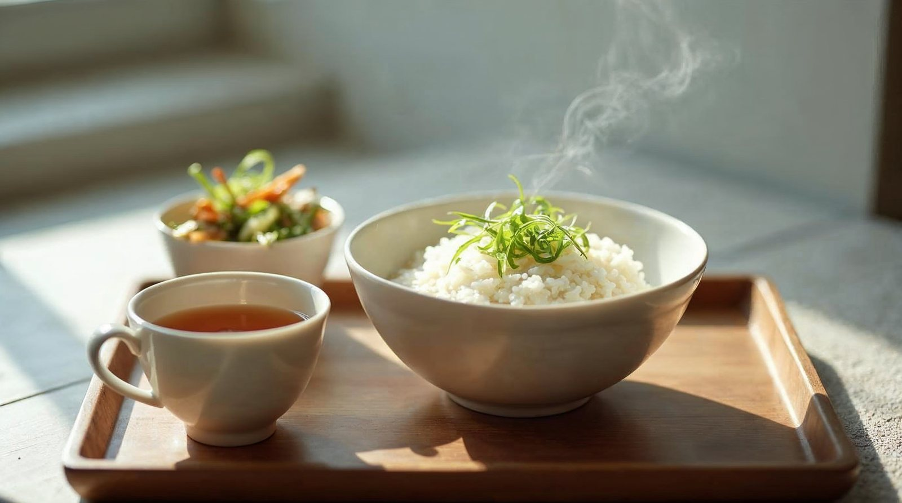
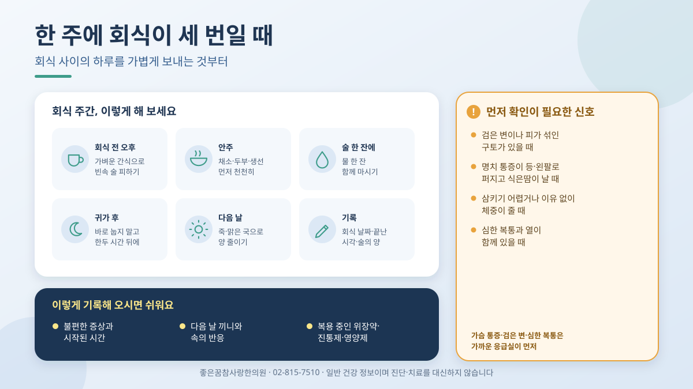

이종호 한의사 감수좋은꿈참사랑한의원 대표원장 (한의사 면허번호 19769)발행 2026-11-25 · 수정 2026-11-25
이 글의 차례
회식이 한 주에 여러 번이라면 회식 자리보다 회식 사이의 하루를 가볍게 보내는 것이 속을 쉬게 하는 첫걸음입니다. 노량진과 상도동 일대 직장인들은 12월이면 저녁 약속이 연달아 잡혀, 아침마다 속이 더부룩하고 신물이 올라온다고 이야기합니다. 약속을 다 피하기 어렵다면 먹는 순서와 다음 날 끼니를 바꿔 볼 수 있습니다.
회식 사이 날의 식사와 잠을 바꿔 보고 한두 주 지켜보는 것이 출발점이며, 검은 변이나 심한 명치 통증 같은 신호가 있으면 기다리지 않습니다.
왜 이런 불편이 생길 수 있나요
- 늦은 시간에 많이 먹고 바로 누우면 음식이 위에 머무는 시간이 길어질 수 있습니다.
- 기름진 안주와 술이 겹치면 속쓰림과 더부룩함이 생기기 쉽습니다.
- 술은 위와 식도 사이의 조임을 느슨하게 할 수 있어, 늦게 마신 날 밤이나 다음 날 아침에 신물이 올라오기 쉬워집니다.
- 잠이 줄면 다음 날 입맛과 소화 리듬이 함께 흔들릴 수 있습니다.
- 다음 날 아침을 거르고 점심을 몰아 먹으면 속이 쉴 틈 없이 다시 부담을 받기 쉽습니다.
- 연말 업무 마감과 회식 자리의 긴장이 겹치면 위장의 움직임이 영향을 받을 수 있습니다.
- 해장한다고 맵고 짠 국물을 급하게 먹으면 속이 더 불편해지는 분도 있습니다.
먼저 이렇게 여쭙니다
- 이번 달 저녁 약속이 일주일에 몇 번 정도인가요?
- 회식 뒤 집에 와서 눕기까지 얼마나 걸리나요?
- 불편한 느낌이 더부룩함인가요, 속쓰림인가요, 설사인가요?
- 대변은 묽어졌나요, 굳어졌나요? 색이 달라진 적은 없나요?
- 다음 날 아침과 점심은 어떻게 드시나요?
- 평소 드시는 위장약이나 다른 약이 있나요?

일상에서 먼저 해 볼 수 있는 것
- 회식 전 오후에 가볍게 간식을 먹어 빈속에 술이 들어가지 않게 하기
- 안주는 채소와 두부, 생선처럼 덜 기름진 것부터 천천히 먹기
- 술 한 잔에 물 한 잔을 함께 마시기
- 자리 끝무렵의 볶음밥이나 라면은 건너뛰고, 2차는 따뜻한 차나 물로 마무리하기
- 집에 와서 바로 눕지 말고 가볍게 씻고 한두 시간 뒤에 눕기
- 다음 날은 죽이나 맑은 국처럼 부드러운 식사로 양을 줄이기
- 회식이 없는 날은 저녁을 평소보다 일찍, 가볍게 먹기
- 한 주에 하루나 이틀은 약속 없는 날로 미리 비워 두기
상황별 예시
- 예를 들어 연말 영업이나 팀 행사로 한 주에 저녁 약속이 세 번 잡힌 직장인의 경우, 화요일과 목요일 회식 사이 수요일을 속 쉬는 날로 정해 점심은 부드럽게, 저녁은 일찍 가볍게 드시는 것부터 해 볼 수 있습니다.
- 예를 들어 노량진 학원가에서 일하며 수업이 끝난 늦은 밤에 송년 모임이 시작되는 경우, 저녁을 거른 채 빈속에 술과 기름진 안주가 들어가기 쉽습니다. 수업 사이에 가벼운 간식을 챙기고, 모임 자리에서는 밥이나 맑은 국물 몇 숟가락으로 먼저 속을 채워 보세요.
- 예를 들어 술은 거의 마시지 않지만 송년 모임마다 고기와 튀김을 늦게까지 먹는 경우에도, 다음 날 아침 신물이 올라오거나 더부룩할 수 있습니다. 이때는 먹는 양과 자리가 끝나는 시각을 먼저 조정해 봅니다.
스스로 점검해 보세요
- 이번 주 저녁 약속 횟수와 끝난 시각을 달력에 적어 보았다.
- 회식 뒤 집에 와서 눕기까지 걸린 시간을 확인했다.
- 불편이 더부룩함인지, 속쓰림인지, 신물인지, 설사인지 구분해 보았다.
- 회식 다음 날 아침을 거르고 점심을 몰아 먹지 않았는지 돌아보았다.
- 회식이 없는 주에는 속이 편한지 비교해 보았다.
- 대변 색이 검거나 피가 섞이지 않았는지 살폈다.
- 회식 전후로 진통제나 위장약을 얼마나 자주 먹었는지 적었다.
얼마나 지켜보고 언제 상담할까요
- 회식 사이 날의 식사와 잠을 바꾸고 한두 주 안에 아침 더부룩함과 속쓰림이 줄어드는 흐름이라면 생활 관리를 이어 가며 지켜볼 수 있습니다.
- 회식이 끝난 뒤에도 두세 주 넘게 속쓰림이나 더부룩함이 이어지거나, 약속이 없는 주에도 같다면 진료에서 확인해 보시길 권합니다.
- 소화 불편이 몇 주 이어지는데 마지막 위 내시경 검사가 오래되었다면 검진 시기도 함께 확인해 보세요.
- 검은 변, 피 섞인 구토, 가슴이나 팔로 퍼지는 통증은 기다리지 않고 바로 응급실을 이용합니다.
한의원에서 함께 살필 수 있는 경우
- 회식 뒤마다 더부룩함과 속쓰림이 며칠씩 이어지는 경우 식사 시간과 속의 상태를 함께 살핍니다.
- 연말마다 설사와 변비가 번갈아 오는 경우 장의 리듬과 잠을 함께 살핍니다.
- 피로와 입맛 없음이 함께 있는 경우 몸의 전체적인 기운도 이어서 여쭙니다.
좋은꿈참사랑한의원에서는 첫 방문 때 이번 달 약속 일정과 회식 사이 날의 식사, 잠드는 시각을 먼저 듣고 맥부터 짚어 봅니다. 필요하다고 판단될 때 혀를 보는 설진과 배를 눌러 보는 복진을 더해 속의 상태와 긴장 정도를 살피고, 상태에 맞춰 침이나 한약 상담 등을 정합니다.
남은 약속을 다 피하기 어려운 경우가 많아, 귀가 전에는 다음 회식 전후에 해 볼 일과 사이 날의 식사, 다음 방문 때 비교할 점을 함께 정리해 드립니다.
이렇게 기록해 오시면 상담이 쉬워집니다
- 회식 날짜와 끝난 시각, 마신 술의 양
- 불편한 증상과 시작된 시간(당일 밤, 다음 날 아침 등)
- 다음 날 먹은 끼니와 속의 반응
- 아침에 일어났을 때 속 상태(더부룩함, 신물, 입맛)를 0~10으로
- 회식이 없는 날의 식사와 속 상태
- 복용 중인 위장약, 진통제, 영양제 이름
- 최근 건강검진이나 내시경 결과지가 있다면 함께
이런 증상은 먼저 확인이 필요합니다
- 검은 변이나 피가 섞인 구토가 있는 경우
- 명치 통증이 등이나 왼쪽 팔로 퍼지고 식은땀이 나는 경우
이런 신호가 있으면 한의원보다 가까운 병원이나 응급실을 먼저 찾으세요.
함께 읽으면 좋은 글
- 연말 회식 다음 날 맵고 뜨거운 해장국을 먹고 속이 더 쓰릴 때는 어떻게 살피나요?
- 술자리에서 안주는 어떻게 고르면 몸 부담을 줄일 수 있나요?
- 한약을 먹는 중인데 연말 회식이 줄줄이 잡혔다면 술은 어떻게 해야 하나요?

여쭙는 것
- 이번 달 저녁 약속이 일주일에 몇 번 정도인가요?
- 회식 뒤 집에 와서 눕기까지 얼마나 걸리나요?
- 불편한 느낌이 더부룩함인가요, 속쓰림인가요, 설사인가요?
생활에서 해 볼 것
- 회식 전 오후에 가볍게 간식을 먹어 빈속에 술이 들어가지 않게 하기
- 안주는 채소와 두부, 생선처럼 덜 기름진 것부터 천천히 먹기
- 술 한 잔에 물 한 잔을 함께 마시기
한의원에서 함께 살필 것
- 회식 뒤마다 더부룩함과 속쓰림이 며칠씩 이어지는 경우 식사 시간과 속의 상태를 함께…
- 연말마다 설사와 변비가 번갈아 오는 경우 장의 리듬과 잠을 함께 살핍니다.
- 피로와 입맛 없음이 함께 있는 경우 몸의 전체적인 기운도 이어서 여쭙니다.
먼저 확인이 필요한 신호
- 검은 변이나 피가 섞인 구토가 있는 경우
- 명치 통증이 등이나 왼쪽 팔로 퍼지고 식은땀이 나는 경우
한눈에 보는 표
| 구분 | 핵심 |
|---|---|
| 여쭙는 것 | 이번 달 저녁 약속이 일주일에 몇 번 정도인가요? 회식 뒤 집에 와서 눕기까지 얼마나 걸리나요? |
| 생활에서 해 볼 것 | 회식 전 오후에 가볍게 간식을 먹어 빈속에 술이 들어가지 않게 하기 안주는 채소와 두부, 생선처럼 덜 기름진 것부터 천천히 먹기 |
| 한의원에서 함께 살필 것 | 회식 뒤마다 더부룩함과 속쓰림이 며칠씩 이어지는 경우 식사 시간과 속의 상태를 함께 살핍니다. 연말마다 설사와 변비가 번갈아 오는 경우 장의 리듬과 잠을 함께 살핍니다. |
| 먼저 확인이 필요한 신호 | 검은 변이나 피가 섞인 구토가 있는 경우 명치 통증이 등이나 왼쪽 팔로 퍼지고 식은땀이 나는 경우 |
자주 묻는 질문
회식 전에 위장약을 미리 먹어도 되나요?
약을 미리 드시는 것은 약사나 처방한 의사와 상의하는 것이 안전합니다. 복용 중인 다른 약이 있으면 함께 알려 주세요.
해장국은 속에 좋은가요?
맑고 덜 자극적인 국물은 부담이 적은 편이지만, 맵고 짠 국물을 급하게 먹으면 속이 더 쓰린 분도 있습니다. 내 속이 편했던 음식을 기억해 두세요.
술을 안 마셔도 속이 불편해요.
늦은 시간의 과식과 줄어든 잠만으로도 속이 불편해질 수 있습니다. 식사 시각과 양, 잠을 함께 적어 오시면 이야기가 쉬워집니다.
회식 다음 날 굶어도 될까요?
완전히 굶기보다 양을 줄여 부드러운 음식을 제때 드시는 것이 리듬을 지키기 쉽습니다.
한약을 먹는 중인데 회식이 많은 달이에요.
술을 마시는 날과 한약 복용 시점을 조정해야 할 수 있어, 회식 일정을 미리 알려 주시면 복용 방법을 함께 정합니다.
좋은꿈참사랑한의원은 재진 때 지난번 이야기부터 이어서 여쭙니다. 진료시간과 예약은 오시는 길에서 확인하세요.
어디서 상담받을 수 있나요?
좋은꿈참사랑한의원은 서울 동작구 만양로2길 2 신성빌딩 3층·5층(서울 동작구 상도동, 7호선 상도역 3번 출구 근처)에 있습니다. 한의사 3명(이종호 대표원장, 조영기 수석진료원장, 정원영 진료원장)이 진료합니다. 진료시간은 평일 09:30~20:00(점심 13:00~14:00), 토·일·공휴일 09:30~15:00이며, 방문 전 전화로 확인을 권합니다. 예약은 네이버 예약, 카카오톡 상담, 전화 02-815-7510로 받습니다.
이 글은 일반적인 건강 정보이며 개인의 진단이나 치료를 대신하지 않습니다. 증상이 있거나 복용 중인 약이 있다면 진료를 통해 확인하세요. 치료 효과는 개인마다 다를 수 있습니다.
작성 기준: 일반적으로 알려져 있는 건강 정보를 참고해 정리했습니다(대표원장 감수). 증상 기록은 1~2주 동안 하루 1회, 비슷한 시간에 적어 오시면 지난 상태와 비교하기 쉽습니다.